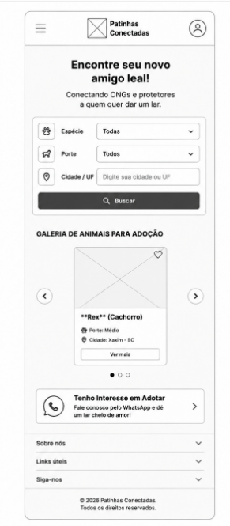
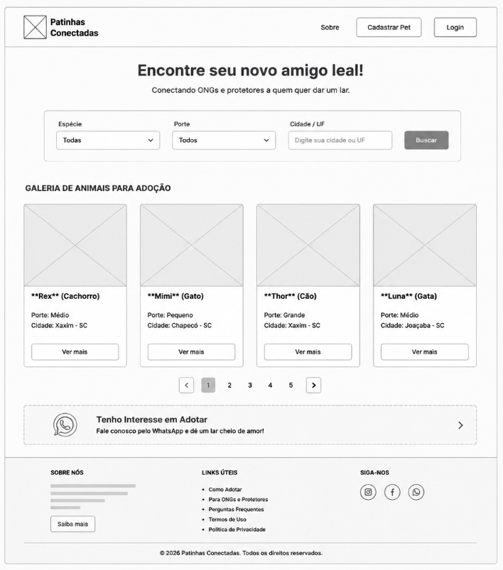

1. Nome do Site
Nome Escolhido: Patinhas Conectadas
Disponibilidade de Domínio:patinhasconectadas.com.br
Justificativa da Escolha: A ideia do nome "Patinhas Conectadas" busca transmitir a união entre a tecnologia e o propósito social de aproximar animais de estimação que precisam de um lar a potenciais adotantes e protetores independentes/ONGs.
2. Finalidade do Site
O Patinhas Conectadas é uma plataforma digital voltada para desburocratizar e acelerar o processo de adoção responsável de cães e gatos. O site busca oferecer uma interface pública com filtros dinâmicos para que adotantes encontrem um pet e entrem em contato direto via WhatsApp com os responsáveis, além de orientações para doadores e ONGs cadastrarem e gerenciarem os animais resgatados.
3. Cenários do Público-Alvo
- Cenário 1 (Adotante): "Como faço para encontrar um cão de porte pequeno para adoção na minha cidade e entrar em contato com a ONG?"
- Cenário 2 (Doador/ONG): "Como posso cadastrar as fotos, idade e história de um animal resgatado para disponibilizá-lo para adoção no site?"
4. Esquema de Cores
O esquema de cores selecionado busca uma identidade acolhedora, confiável e amigável:
5. Tipografia
Fonte dos Títulos: Montserrat (Sans-Serif)
Fonte do Corpo do Texto: Open Sans (Sans-Serif) – Usada para descrições, listas e parágrafos mantendo alta legibilidade.
6. Wireframes da Página Inicial
Esboços de estrutura responsiva projetados para telas pequenas (Mobile) e telas amplas (Desktop):

